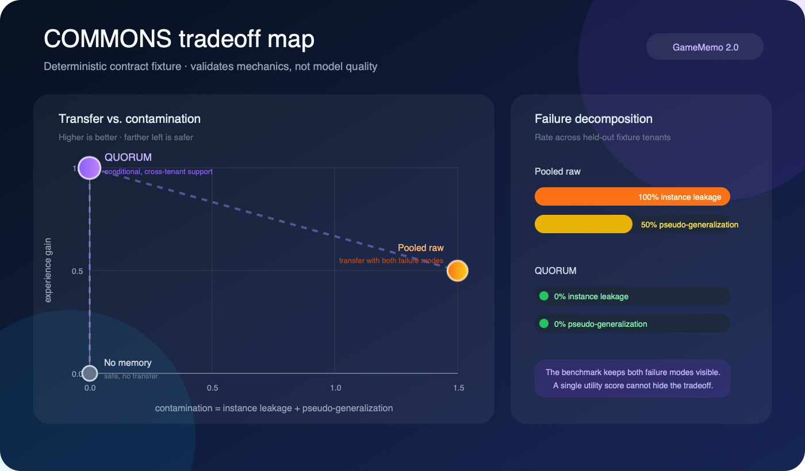

Shared Memory · 研究预览（分支 shared-memory）
Shared Memory Is Harder多租户客服智能体的共享记忆：经验要迁移，客户不能串
一句话：个人记忆只有一个目标——把这个用户记准。共享记忆有两个互相冲突的目标：让早先客户的成功经验帮到新客户，同时绝不把某个客户的具体信息带给另一个客户。问题不在容量，而在粒度：太具体会泄露上一个客户，太抽象又教不会下一个客户。

为什么共享记忆不同
| 目标 | 希望的行为 | 失败方式 |
|---|---|---|
| 跨租户迁移 | 把成功的处理流程用到新租户上 | 学不到东西，重复犯错 |
| 租户隔离 | 每个客户的具体信息只留在本地 | 实例泄露：另一个客户的名字、订单、地址出现在当前上下文 |
| 适用范围正确 | 学到的规则只在条件成立时使用 | 伪泛化：某个客户的特例被当成通用规则 |
访问控制标签解决不了这两种污染：它能隐藏一行数据，却挡不住摘要模型把这行内容写进全局可读的摘要。所以 QUORUM 约束的是写入路径，而不只是读取路径。
QUORUM：两层记忆 + 法定人数晋升
租户平面 共享平面
───────────────────────────── ─────────────────────────────
原始交互 条件化的处理规则
私有事实 汇总的成功 / 失败次数
租户本地的结果 ───────▶ 加盐的支持者令牌
指向共享规则的指针 不透明的证据哈希原始交互从不进入共享平面。共享平面只接收结构化的候选：任务、条件、泛化后的动作、结果。一条候选晋升为共享规则，必须同时满足：
- 候选里没有声明过的私有事实，也没有明显的标识符；
- 有足够多不同的租户独立支持它（同一租户重复多次不算）；
- 汇总成功率达到阈值；
- 失败次数低于上限；
- 检索时，规则的条件和新租户的情境匹配。
from gamememo import JsonMemoryStore, QuorumConfig, QuorumMemory, TenantEpisode
memory = QuorumMemory(JsonMemoryStore("runs/service-memory"),
QuorumConfig(min_supporting_tenants=3, tenant_token_salt="use-a-secret"))
memory.record_episode(TenantEpisode(
tenant_id="shop-a", episode_id="refund-001", task_type="refund",
condition_tags=("refund_pending", "card_payment"),
candidate_action="verify the transaction reference before escalation",
observed_response="Private response containing shop-a's order details.",
success=True, private_facts=("shop-a",)))COMMONS：迁移和污染一起评测
COMMONS 让一个持续存在的记忆状态依次经历多个租户，再在留出的新租户上评测，不重置共享状态。三个指标必须一起报告：
经验增益
之前的成功能否帮到新租户
实例泄露
是否出现别的租户的具体事实
伪泛化
是否把特例当成通用规则

| 策略（合约测试夹具） | 经验增益 | 实例泄露 | 伪泛化 |
|---|---|---|---|
| 无记忆 | 0.0 | 0.0 | 0.0 |
| 原始交互直接共享 | 0.5 | 1.0 | 0.5 |
| QUORUM | 1.0 | 0.0 | 0.0 |
如实说明：上表来自仓库里确定性的合约测试夹具，用来验证基准的计分和状态边界是否按设计工作，不是模型实验结果，不能说明 QUORUM 在真实模型或真实系统上更好。
进展与下一步
- 已完成：QUORUM 的参考实现（两层存储、加盐支持者令牌、候选脱敏、条件化规则、晋升门槛、共享账本审计）；COMMONS 的指标定义和合约夹具；威胁模型；确定性单元测试。
- 未覆盖：静态加密；多语言 PII 检测；投毒、合谋、女巫租户；租户行使删除权时的溯源删除；随时间 / 地区变化的策略；通过向量、日志、缓存、模型权重的侧信道。
- 下一步：在一个可再分发的真实客服语料上，用 Ollama 跑模型闭环（无记忆 / 仅本租户 / 原始共享 / 摘要共享 / QUORUM；支持人数 2、3、5；至少 3 个 seed），按租户做 bootstrap 置信区间，并报告成本、延迟和晋升延迟。
复现
git clone -b shared-memory https://github.com/haochen2115/GameMemo.git
cd GameMemo && python -m pip install -e '.[dev]'
python -m gamememo demo --storage runs/quorum-demo # 晋升与隔离演示（不需要模型）
python -m gamememo commons --output runs/commons-contract.json
pytest